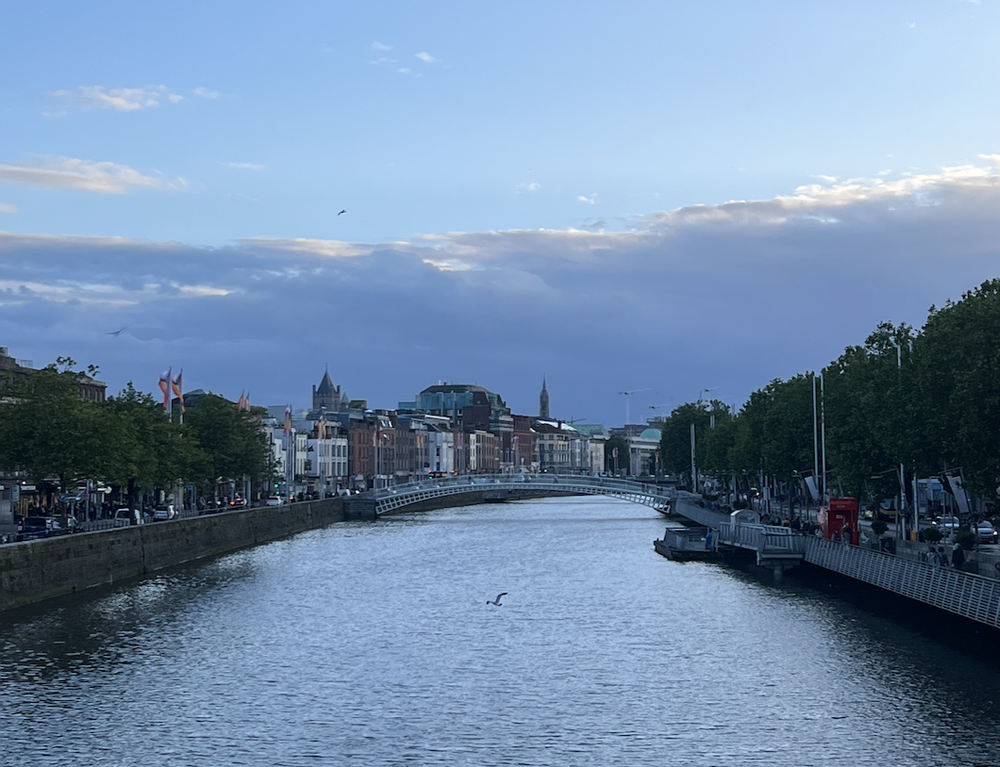

Projects
University of Missouri Columbia - College of Engineering Student Ambassador/Director (May 2021 – Present)
As a student ambassador, I lead tours of the College of Engineering to prospective students and families visiting Mizzou. In this tour, we showcase our building and highlight important things there such as our state-of-the-art labs, student involvement opportunities, and student resources. In addition to this, we write a follow-up thank you note to those families who toured. We also assist Student Services with folding t-shirts and calling students about scholarship deadlines. As a student director, I collaborate with 4 other student directors to create presentation material for our program. This presentation material focuses on organization updates, inclusivity training, and tour guide training.
Reflection: This experience of being an ambassador is a rewarding one. It can be a lot of pressure as you could influence someone to either want to or not come to Mizzou. Coming to the engineering school for the first time can be intimidating as it can be one of the hardest fields of study. However, with hard work and determination, anyone can be an engineer and that is an important thing for our families to know.
University of Missouri Columbia - College of Engineering Peer Learning Assistant (January 2022 – December 2022)
As a peer learning assistant, I worked alongside other learning staff for the Information Technology’s Project and Team Management course. I provided support for fifty students each semester through grading, office hours, and providing feedback on course assignments, quizzes, and projects. I held office hours three times a week for a total of one hour each to be a resource students could go to whether it be to ask questions on the course material or advice on how to navigate difficult situations in their assigned teams. I worked with students who were part-time/full-time, on-campus students as well as students who were part-time/full-time distance students. In this role, I needed to make sure that everyone was on the same page regardless of where they were earning from to ensure they had a positive classroom experience.
Reflection: In this role, I learned that it is important to put yourself in someone’s shoes. This can be for management or just in general, but it is important to never assume what someone is going through. I also learned that you need to be approachable in a position of power. It helps keep the relationship between the leader and students healthy.
University of Missouri - Division of Information Technology User Support Analyst (May 2021 – August 2022)
As a user support analyst, I worked at Tiger Tech in the basement of the Mizzou Student Center as a Service Desk Representative and worked remotely for the Mizzou IT Help Desk as a Help Desk Representative. As a service desk representative and help desk representative, I assisted with walk-up support for customers who had issues specific to Software and Hardware issues. From there, I worked alongside my team to find solutions to their complex problems. This ensured that our customers felt better than they did when they came here which is important when dealing with very stressful issues.
Reflection: In this role, I learned that honesty and patience is vital with your co-workers and your customers. Most customers tend to be very stressed, and you want to ensure you are doing everything you can to remain calm and do your job thoughtfully. When a team has a good morale, it shows to our customers which makes them feel comfortable coming to us with their technology issues.
University of Missouri Columbia Study Abroad in Dublin, Ireland: Irish Art Gallery (June 2022 – August 2022)
In my experience studying abroad, I learned to immerse myself in a different country and create a culturally appropriate product. In this work experience, I worked alongside two colleagues to create a website to host our 3D, Augmented Reality Museum. We developed an application in SwiftUI to capture 3D objects in real-time for our museum. This museum was programmed in Unity using C# techniques. I also implemented an Agile environment to lead an effective team. This led to us finishing our project on time while keeping the team morale up throughout this extensive project.
Reflection: This experience was truly one of a lifetime. This was the first time I was able to put my skills in leadership to the test as I was appointed our team leader. I learned that to run a successful project, you need to meet your team member's needs before your own. This ensures our team was happy and not feeling overwhelmed which was vital to completing this assignment.
